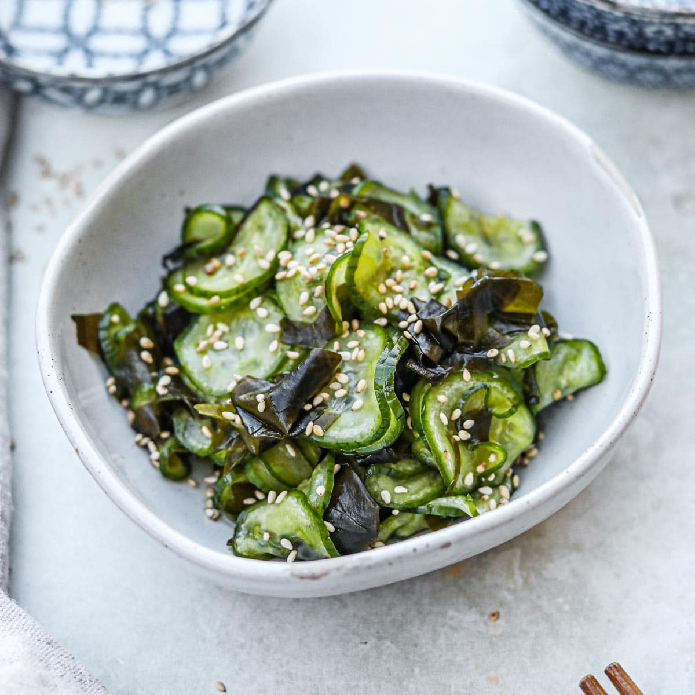

Home

Sunomono (Salad timun jepang)
Bahan
- 2 timun (iris tipis)
- 1/2 sdt garam
- Saus : 3 sdm cuka beras (ganti air jeruk nipis + 1 sdt gula), 1 sdt kecap asin, 1/2 sdt wijen sangrai.
Cara
- Remas timun dengan garam, diamkan 10 menit, bilas.
- Campur semua bahan saus, tuang ke timun.
- Simpan 30 menit di suhu ruang sebelum disajikan.
Variasi
- Tambahkan wortel parut atau nori